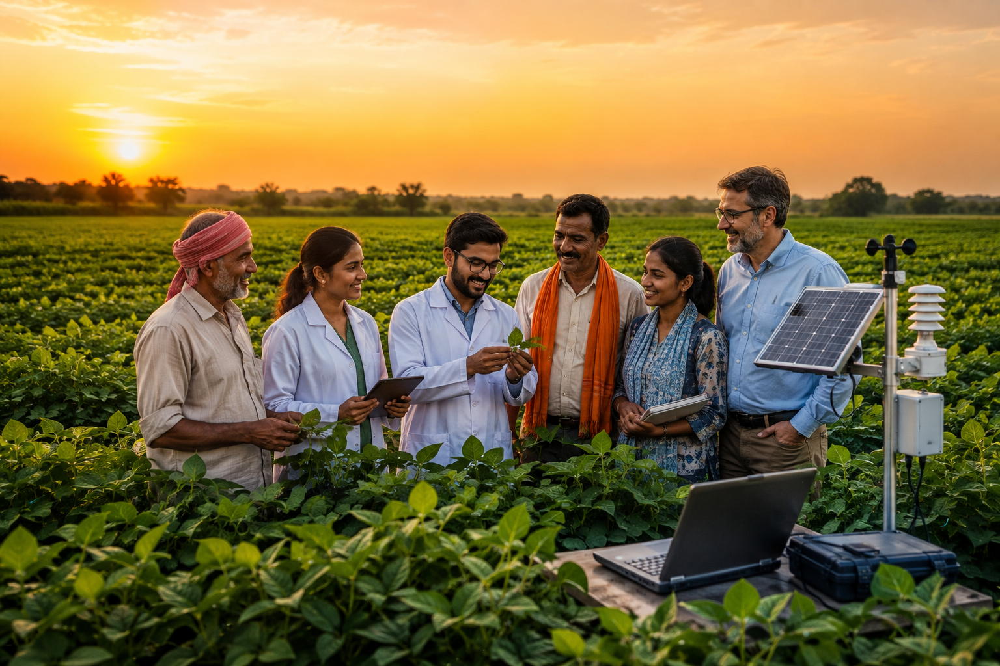

We are a team of agricultural experts and technologists dedicated to building tools that actually help farmers.
Too often, agricultural technology is built by people who have never stepped foot on a farm. It looks great in a boardroom, but fails in the field. AGROVIA was founded to change that.
The principles that guide every product we build.
Technology should solve real farming problems, not create new ones.
Farmers need information they can trust. Our systems are built for uptime.
Better decisions help protect resources and ensure farming for generations.
Technology should support and empower farmers, not try to replace them.
We spend as much time in the field as we do behind a screen. By riding in tractors, walking the rows, and listening to the people who grow our food, we design products that fit naturally into real agricultural workflows.
Our interfaces are built to be read in bright sunlight, our hardware withstands driving rain, and our alerts happen exactly when you need them.
